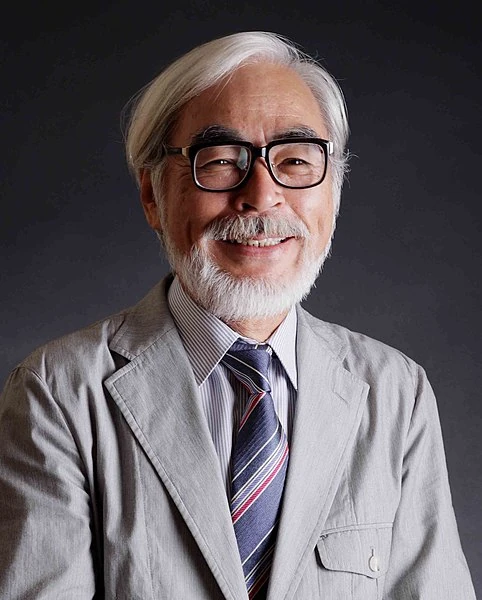
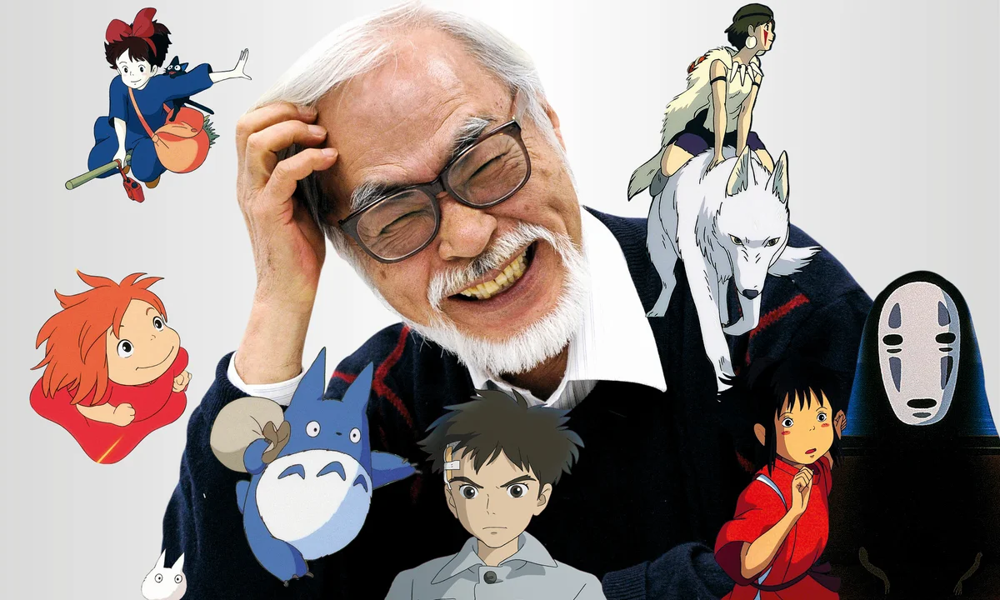
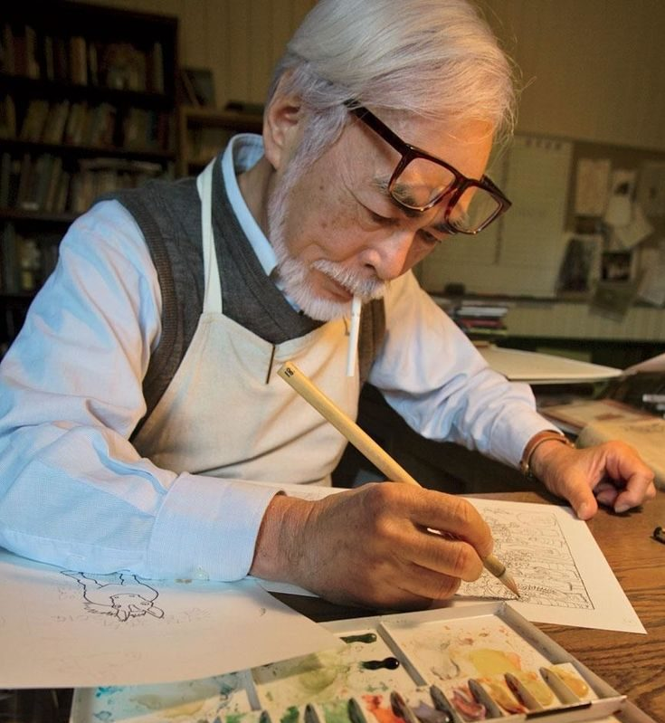

Why i liked his arts, manga and anime
It is my introduction of Ghibli studio
 Click to watchHayao Miyazaki is one of Japan's greatest animation directors.
Miyazaki was born in Tokyo, and is the second son of four brothers.
When started
Studio Ghibli has been gently revolutionizing the animation world since 1986, combining an endearing and empathetic worldview with rousing adventure. That was the year of their debut feature, Castle in the Sky, which heralded the superstar team of Hayao Miyazaki and Isao Takahata. (Nausicaa, which we’re including on this list, was made before Ghibli’s founding but has been culturally adopted as part of of filmography.) Miyazaki has been Studio Ghibli’s global champion, and rounded out the rest of the ’80s with My Neighbor Totoro and Kiki’s Delivery Service. And it wasn’t long before producer Takahata wore the director’s hat, crafting the somber Grave of the Fireflies, which played as a double feature with Totoro in Japan.
What happened to his studio
 Click to watchEntering the ’90s, the two Ghibli founders went toe-to-toe with Porco Rosso and Only Yesterday. The latter was by Takahata, establishing him as a more dramatically grounded artist as compared to Miyazaki’s literal flights of fancy. But it is Miyazaki’s fantastical stories that have proven popular internationally, from the ecological war epic Princess Mononoke to the witchcraft and wizardry of Howl’s Moving Castle to the Oscar-winning masterpiece Spirited Away. The Tale of Princess Kaguya was Takahata’s final film before his death in 2018.

Click to watch